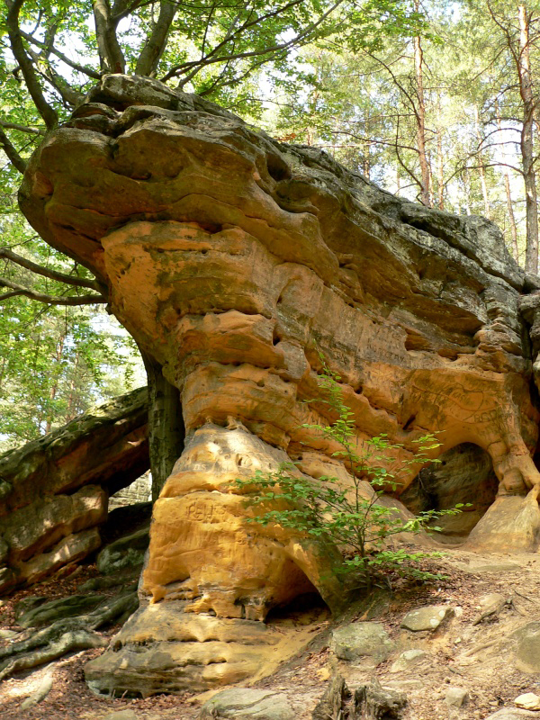

Rezerwat przyrody Skałki Piekło pod Niekłaniem
Rezerwat przyrody nieożywionej na terenie Konecko-Łopuszniańskiego Obszaru Chronionego Krajobrazu w gminie Stąporków, w powiecie koneckim, w północnej części województwa świętokrzyskiego, w pobliżu miejscowości Niekłań Wielki. Skałki ciągną się na długość około 1 kilometra, ich wysokość dochodzi do 8 metrów.